Deep Tech & AI
Hard-tech ventures and AI applications emerging from frontier research labs across the GBA.
Greater Bay Area · 大湾区
李佛创投笔记Li Fo Venture Notes
Managing Director & Head of University Ventures · Gobi Partners
Turning breakthrough university research into scalable ventures — investing, teaching and building the deep-tech and Life Sciences ecosystem across Hong Kong and the Greater Bay Area.
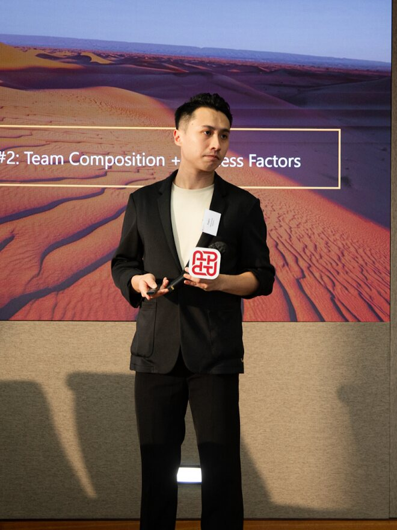
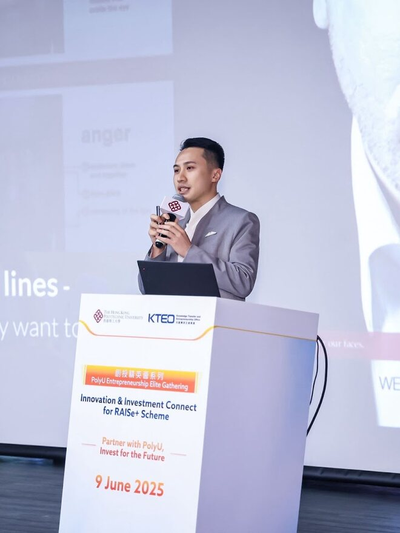
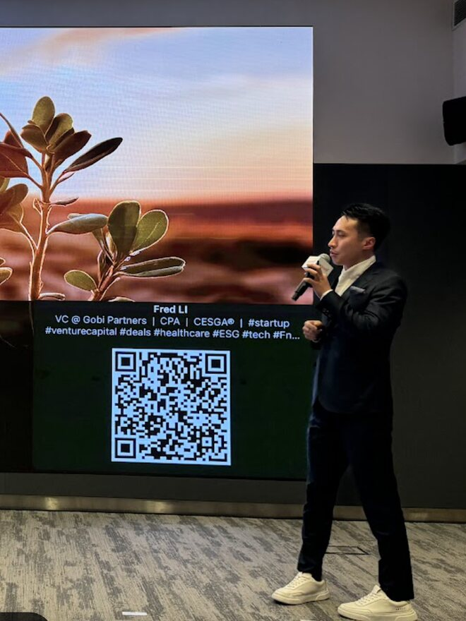
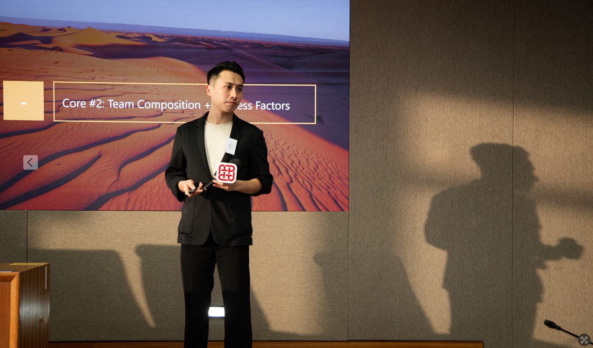
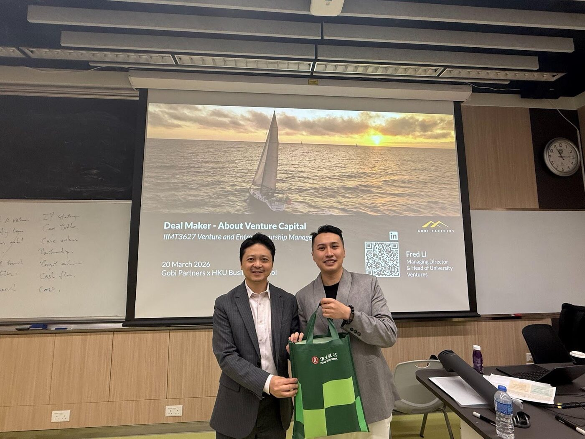
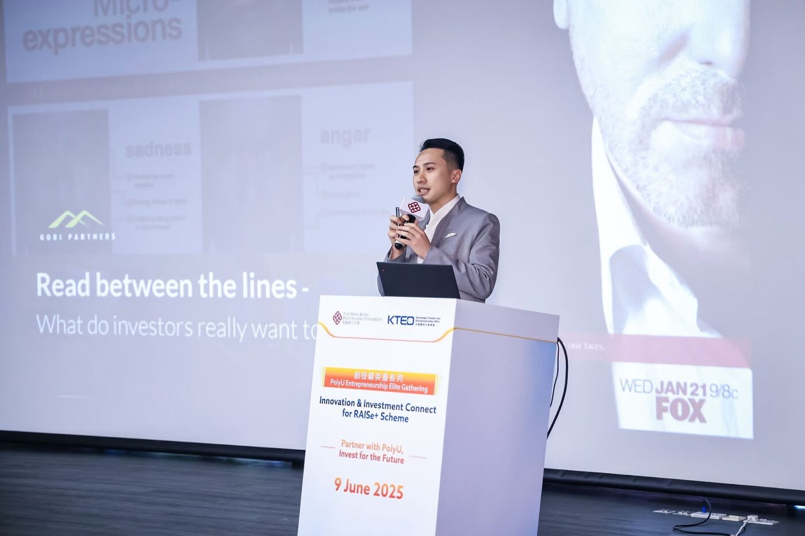
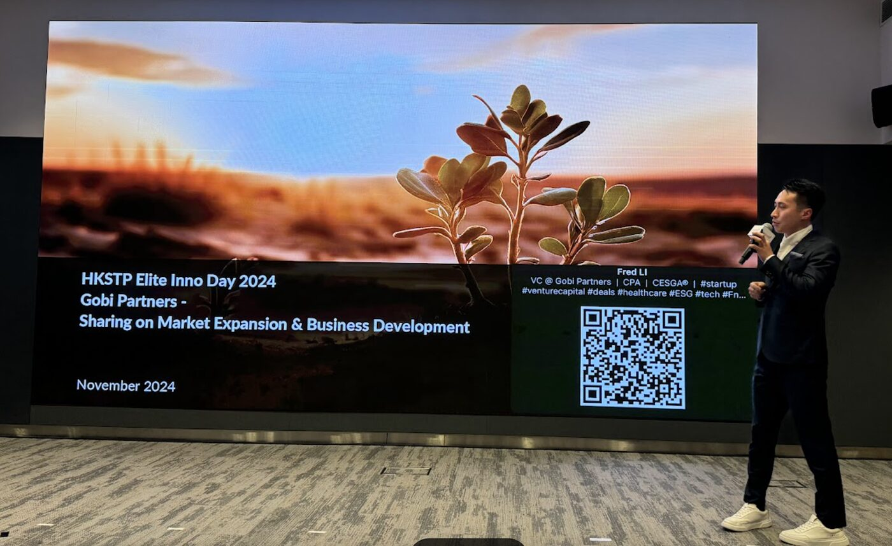
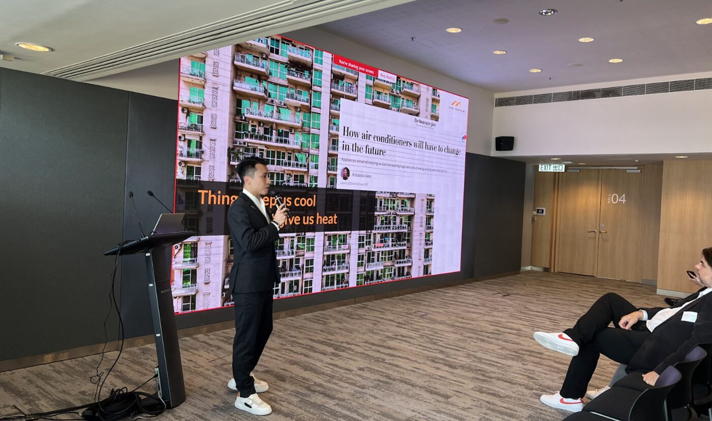
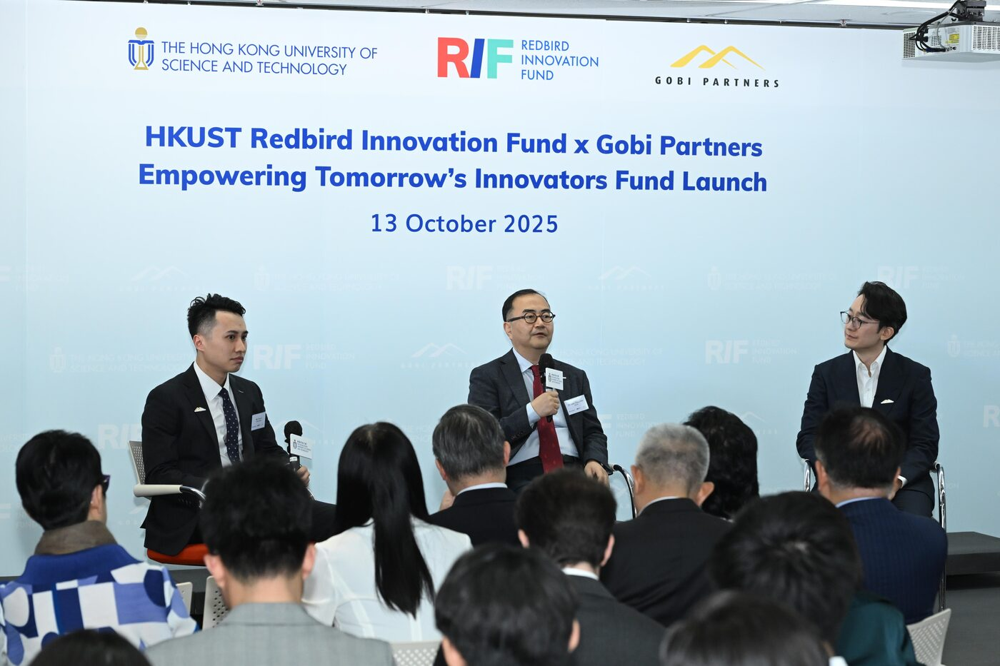
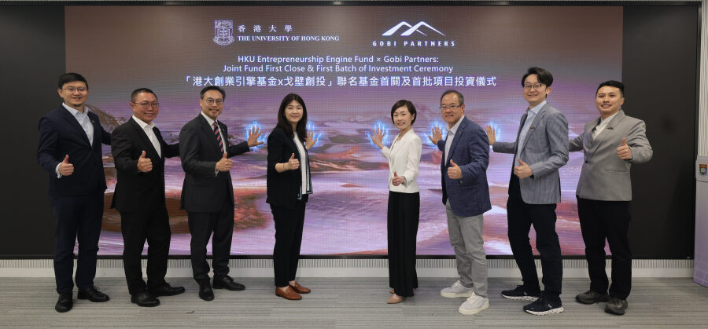
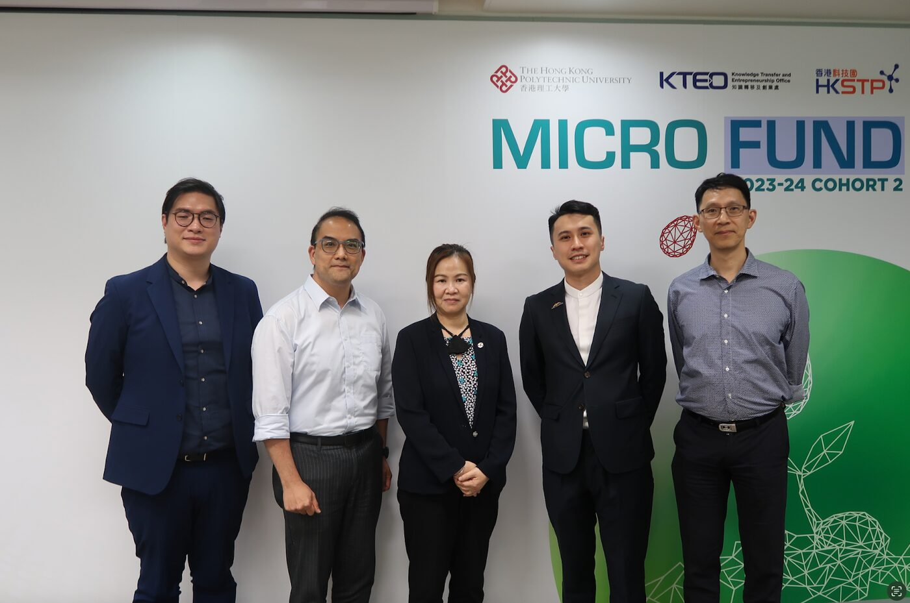
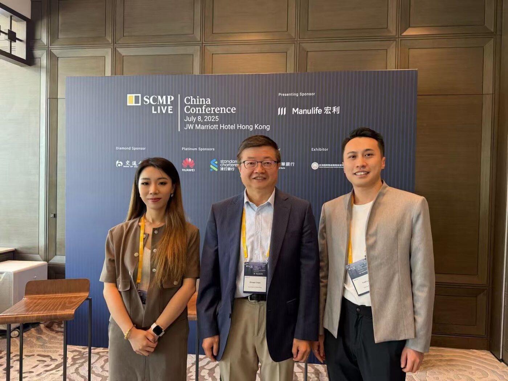
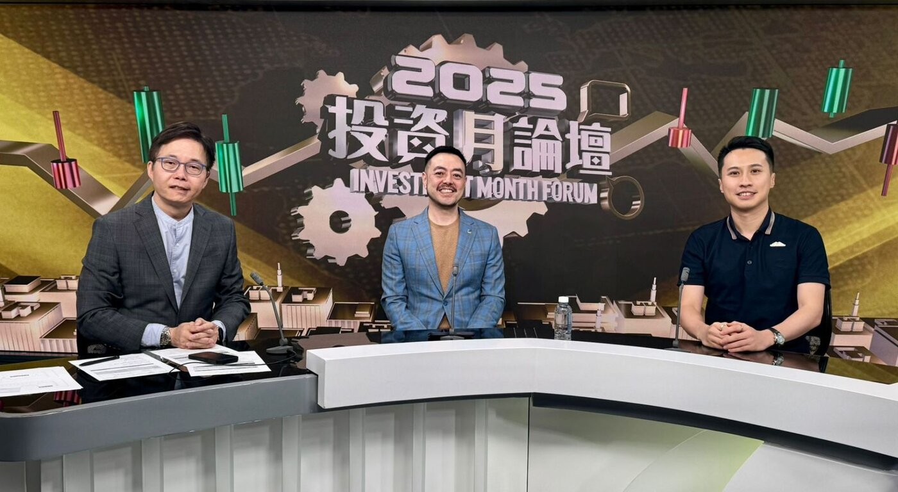
Fred Li is Managing Director and Head of University Ventures at Gobi Partners, working across the Greater Bay Area. He spearheads the firm's university–industry–research–investment ecosystem, helping transform academic innovation into commercially viable companies — and as an educator, teaches 100+ hours a year across six Hong Kong universities.
With over 15 years of experience in private-market transactions, management operations and turnarounds — as both a deal maker and a former General Manager — Fred brings a rare blend of investment judgment and hands-on operating experience to the founders he backs.
Fred began his career in restructuring advisory at Deloitte, then built full-cycle deal experience across VC and PE — Senior Associate at Ocean Equity Partners (MFO), Vice President at CITIC CLSA Capital Partners, and Executive Director at Hywin International — serving on portfolio-company boards along the way. As Group General Manager of Gaia Group, a 1,000-person company in his previous portfolio, he led successful turnarounds and digital transformation first-hand.
He writes under the personal brand 李佛创投笔记 (Li Fo Venture Notes), sharing bilingual insights on Life Sciences, AI, deep tech and the Greater Bay Area startup ecosystem.
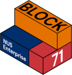
Hard-tech ventures and AI applications emerging from frontier research labs across the GBA.
Biotech and healthcare platforms — from AI-driven drug discovery to peptide design and therapeutics.
Commercialising academic IP into investable companies with the right team and structure.
Patient capital for the next generation of sustainability and climate-impact founders.
Selected deep-dive articles from the WeChat blog, newest first.
Leading Gobi's dedicated university venture initiative across the Greater Bay Area, connecting research, industry and investment.
Joined HKU and Hong Kong Investment Corporation (HKIC) leaders to launch a joint initiative supporting university innovation.
Part of Gobi's commitment to commercialising university research and backing early-stage Hong Kong start-ups.
Lecturer, panelist, trainer and mentor across HKU, HKUST, PolyU, HKBU, CityU, CUHK-Shenzhen, NUS BLOCK71, HKSTP, Cyberport, BIOHK and BIOCHINA ecosystem programmes.
Selected appearances and interviews across Hong Kong and regional media.
Quick answers about Fred Li and 李佛创投笔记.
Fred Li (李冠乐, Li Koon Lok) is Managing Director & Head of University Ventures at Gobi Partners, based in Hong Kong. He leads Gobi's university ventures strategy across the Greater Bay Area — including the Gobi-HKU Fund I with The University of Hong Kong and the Gobi-Redbird Innovation Fund with HKUST — investing in deep tech, biotech and university spin-offs.
李佛创投笔记 is Fred's WeChat official account (公众号), publishing Chinese-language deep dives on venture capital, university spin-offs, technology transfer, and the Hong Kong / Greater Bay Area innovation ecosystem.
Early-stage deep tech: university spin-offs, Life Sciences (biotech & healthcare), AI and robotics, and greentech — primarily across Hong Kong and the Greater Bay Area.
Connect on LinkedIn, or follow 李佛创投笔记 on WeChat.
Bilingual insights on biotech, AI, deep tech and the GBA startup ecosystem.
Scan to follow 李佛创投笔记
Follow my WeChat publication 李佛创投笔记 for first-person notes from the deal table — patient-capital perspectives on deep tech and life sciences in Hong Kong and the Greater Bay Area.